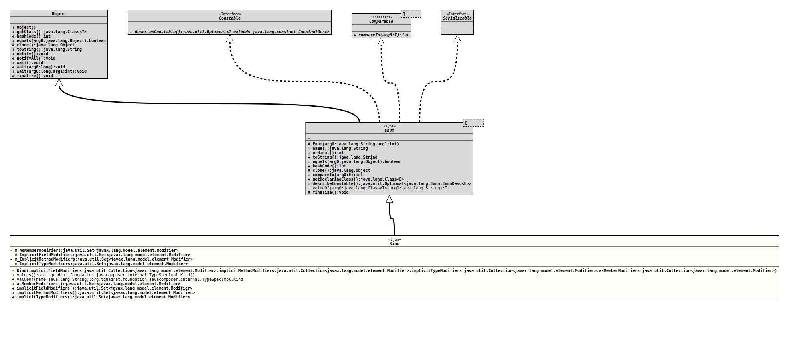

Enum Class TypeSpecImpl.Kind
- All Implemented Interfaces:
Serializable,Comparable<TypeSpecImpl.Kind>,Constable
- Enclosing class:
TypeSpecImpl
@ClassVersion(sourceVersion="$Id: TypeSpecImpl.java 1105 2024-02-28 12:58:46Z tquadrat $")
@API(status=INTERNAL,
since="0.0.5")
public static enum TypeSpecImpl.Kind
extends Enum<TypeSpecImpl.Kind>
The kind of type specified by a
TypeSpecImpl
instance.- Author:
- Square,Inc.
- Modified by:
- Thomas Thrien (thomas.thrien@tquadrat.org)
- Version:
- $Id: TypeSpecImpl.java 1105 2024-02-28 12:58:46Z tquadrat $
- Since:
- 0.0.5
- UML Diagram
-

UML Diagram for "org.tquadrat.foundation.javacomposer.internal.TypeSpecImpl.Kind"
{kind=link}
-
Nested Class Summary
Nested classes/interfaces inherited from class java.lang.Enum
Enum.EnumDesc<E extends Enum<E>> -
Enum Constant Summary
Enum ConstantsEnum ConstantDescriptionThe type is an annotation.The type is a regular class.The type is anenum.The type is an interface.The type is an interface. -
Field Summary
FieldsModifier and TypeFieldDescriptionTODO Write the comment for the field m_AsMemberModifiers!!The implicit field modifiers for a type of this kind.The implicit method modifiers for a type of this kind.The implicit type modifiers for a type of this kind. -
Constructor Summary
ConstructorsModifierConstructorDescriptionprivateKind(Collection<Modifier> implicitFieldModifiers, Collection<Modifier> implicitMethodModifiers, Collection<Modifier> implicitTypeModifiers, Collection<Modifier> asMemberModifiers) Creates a newKindinstance. -
Method Summary
Modifier and TypeMethodDescriptionTODO Write the comment for method Kind.asMemberModifiers()!!Returns the implicit field modifiers for this kind.Returns the implicit method modifiers for this kind.Returns the implicit type modifiers for this kind.static TypeSpecImpl.KindReturns the enum constant of this class with the specified name.static TypeSpecImpl.Kind[]values()Returns an array containing the constants of this enum class, in the order they are declared.
-
Enum Constant Details
-
ANNOTATION
The type is an annotation. -
CLASS
The type is a regular class. -
ENUM
The type is anenum. -
INTERFACE
The type is an interface. -
RECORD
The type is an interface.
-
-
Field Details
-
m_AsMemberModifiers
TODO Write the comment for the field m_AsMemberModifiers!! -
m_ImplicitFieldModifiers
The implicit field modifiers for a type of this kind. -
m_ImplicitMethodModifiers
The implicit method modifiers for a type of this kind. -
m_ImplicitTypeModifiers
The implicit type modifiers for a type of this kind.
-
-
Constructor Details
-
Kind
private Kind(Collection<Modifier> implicitFieldModifiers, Collection<Modifier> implicitMethodModifiers, Collection<Modifier> implicitTypeModifiers, Collection<Modifier> asMemberModifiers) Creates a newKindinstance.- Parameters:
implicitFieldModifiers- The implicit field modifiers for a type of this kind.implicitMethodModifiers- The implicit method modifiers for a type of this kind.implicitTypeModifiers- The implicit type modifiers for a type of this kind.asMemberModifiers- The member modifiers for a type of this kind.
-
-
Method Details
-
values
Returns an array containing the constants of this enum class, in the order they are declared.- Returns:
- an array containing the constants of this enum class, in the order they are declared
-
valueOf
Returns the enum constant of this class with the specified name. The string must match exactly an identifier used to declare an enum constant in this class. (Extraneous whitespace characters are not permitted.)- Parameters:
name- the name of the enum constant to be returned.- Returns:
- the enum constant with the specified name
- Throws:
IllegalArgumentException- if this enum class has no constant with the specified nameNullPointerException- if the argument is null
-
asMemberModifiers
TODO Write the comment for method Kind.asMemberModifiers()!!- Returns:
- ?
-
implicitFieldModifiers
Returns the implicit field modifiers for this kind.- Returns:
- The implicit filed modifiers for this kind.
-
implicitMethodModifiers
Returns the implicit method modifiers for this kind.- Returns:
- The implicit method modifiers for this kind.
-
implicitTypeModifiers
Returns the implicit type modifiers for this kind.- Returns:
- The implicit type modifiers for this kind.
-